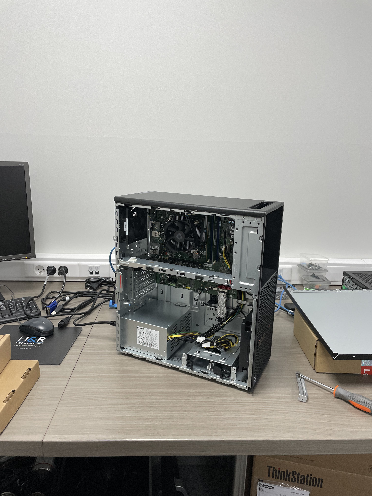

Actief
Vandaag begon ik mijn dag om 8u30. Ik heb eerst wat te drinken gepakt, omdat ik 's ochtends nog niets had gedronken. Daarna ben ik bij Brend gaan zitten, en hebben we eerst een paar mailboxen aan e-mails gekoppeld. Vervolgens hebben we enkele klanten geholpen die problemen hadden met het openen van een server op een externe locatie. Dit hebben we opgelost door deze opnieuw te koppelen.
Daarna hebben we nog even een pc voor een klant gebouwd, die deze later op de middag kwam ophalen. We hebben alle onderdelen zelf geïnstalleerd. Tegen de tijd dat deze pc helemaal klaar was, was het al bijna 12u, waardoor ik al mocht stoppen.
